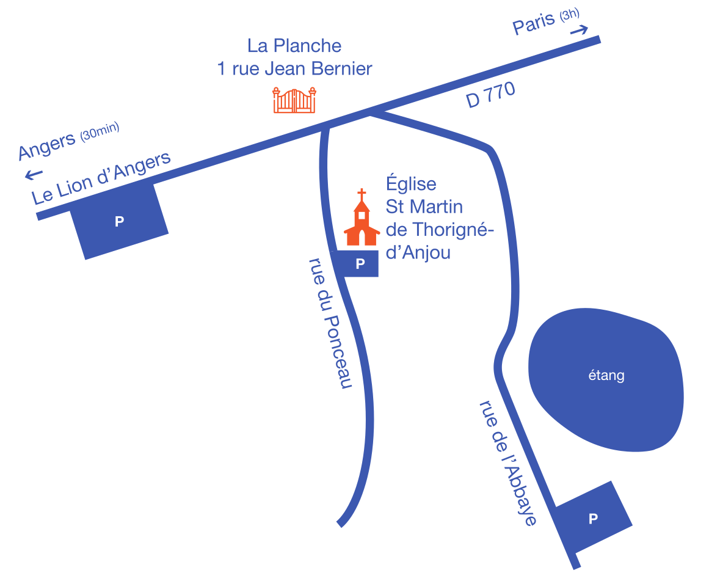

Informations pratiques
-
La messe de mariage sera célébrée le samedi 27 avril 2019 à 15h30 dans
l'église de Thorigné d'Anjou,
par le Père Bruno Le Pivain.
Attention : Google Maps ne sait pas situer l’église et il existe
une autre église St Martin à quelques kilomètres... Pour ne pas vous
tromper, nous vous conseillons de suivre
ce lien.

-
À l’issue de la messe, nous nous retrouverons à 17h30,
dans le jardin de La Planche, maison familiale du côté de Guillaume,
au 1 rue Jean Bernier.
Le lieu de la réception est littéralement à 10 pas de l’église,
il n’y a donc pas besoin de prendre sa voiture entre les deux.
-
Le dîner aura lieu au même endroit, à partir de 19h30.
Si vous souhaitez organiser une petite animation pour nous faire rire,
nous surprendre ou nous émouvoir, cela nous ferait très plaisir.
Vous pouvez prendre contact avec Gabriel et Christian Noirot (frères de Lucie),
qui se chargeront de centraliser cela. Leurs adresses sont :
gabriel.noirot@dartybox.com
et
christian.noirot@dartybox.com.
-
Des emplacements de parking sont indiqués par un P sur le plan ci-dessous.
En revanche, vous ne pourrez pas rentrer dans la propriété en voiture.

-
Des baby-sitters seront présentes pour les jeunes enfants.
Comment venir
-
Thorigné-d’Anjou se situe dans le département du Maine et Loire (49).
Vous pouvez venir en voiture : il faut prévoir environ 3 heures
depuis Paris, 4 heures depuis Bordeaux.
-
Si vous cherchez des places dans une voiture, ou si vous avez des places
disponibles dans votre voiture, vous pouvez remplir
ce tableau
pour organiser des covoiturages.
-
Si vous souhaitez venir en train, la gare d’Angers-Saint-Laud est bien
desservie par les TGV (1h30 depuis Paris). Il faut ensuite compter une
demi-heure de voiture jusqu’au lieu du mariage.
Vous pouvez chercher un covoiturage en remplissant
ce tableau.
Où loger
-
Une liste d’hôtels et chambre d’hôtes est disponible sur le site
www.anjoubleu.com/carte
(onglet vert, «Hébergements»).
-
Pour les plus téméraires d’entre vous, vous pouvez prévoir de planter
votre tente, ou d’accrocher votre bâche au fond du jardin.
Liste de mariage
-
Si vous souhaitez nous offrir quelque chose à l’occasion de notre mariage,
vous pouvez le faire directement sur notre liste de mariage en ligne :
www.millemercismariage.com/GuiLu2019/liste.html.
Toute surprise nous fera également très plaisir.
Merci pour votre générosité !

{kind=link}